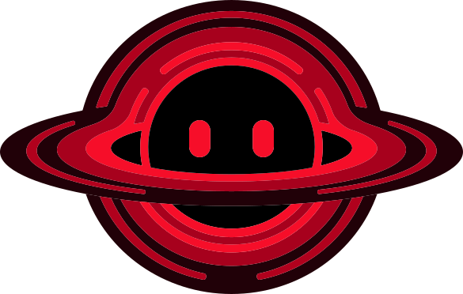

Внимание к деталям.
Уважение к решению человека.
Anyko / Ани́ко. Первый сценарий — подготовка заявлений о банкротстве физического лица. Общее обещание бренда — помочь специалисту собрать проверяемые сведения из разрозненных документов.
Загрузите документы.
Проверьте сведения.
Получите заявление.
Внимательный · спокойный · точный
Показываем источник каждой найденной суммы. Честно отмечаем пропуски и противоречия. Помогаем подготовить документ по утверждённому шаблону.
Узнаваемый знак. То же имя.
Сохраняем персонажа и написание Anyko. Горизонтальная композиция объединяет исходный знак сайта и системный гротеск насыщенностью 800.
Свободное поле
Не меньше ¼ высоты знака со всех сторон.
Без искажения
Сохраняем пропорции, цвета и полное кольцо персонажа.
Читаемый размер
Знак от 40 px по ширине. Композиция от 150 px.
Малиновый акцент.
Спокойное окружение.
Основной акцент и тёмные поверхности взяты со старого сайта. Цвета персонажа хранятся отдельно и не заменяются цветом кнопок.
#DB143C · основной#201114 · поверхность#09090B · фон#18181B · карточкиПалитра исходного персонажа
#210106#6D0C1F#D82133#F33647Дополнение: светлый рабочий кабинет
#FAF8F9#FFFFFF#65616A#FDECF0Цвет бренда и статус — разные роли
Всегда добавляем текст и значок. Красная кнопка — действие бренда, а ошибка — отдельное сообщение с причиной.
Анико уже здесь.
Используем найденные исходники. Главный вариант — agent.svg. Альтернативный agent-2.svg сохраняем отдельно: его силуэт и пропорции отличаются.

Загрузите документы
Появляется в пустом деле и помогает начать.
Проверьте сведения
Обращает внимание на пропуск, не пугая пользователя.
Заявление сформировано
Подтверждает действие, не обещает юридический исход.
Три голоса.
Один характер.
Onest — для повседневной работы. Manrope — для сильных заголовков. Unbounded — когда композиции нужен необычный, запоминающийся акцент. Все три семейства подключены локально с кириллицей.
Проверьте сведения из загруженных документов. Для каждой суммы можно открыть источник и уточнить данные.
Абзацы, поля, таблицы, навигация, кнопки и подписи. Читаемый текст, который не спорит с содержанием.
Каждый факт
на своём месте.
Заголовки страниц, разделов, карточек и основной текст обложки. Геометрический рисунок и плотное начертание создают уверенный ритм.
Всё
сходится.
Редкий акцент для обложки, кампании или специальной композиции. Широкий, немного странный и футуристичный — в характере Анико. Фраза здесь показывает набор, а не подтверждает проверку дела.
Размер и ритм
Применение
Без искусственного сжатия и растягивания. Для сумм — табличные цифры. Для узкой карточки — Manrope вместо широкого Unbounded.
Логотип сохраняет прежнюю надпись: новая типографика применяется к текстам бренда и интерфейсу.
Источники шрифтов · лицензии находятся рядом с файлами.
Один бренд.
Два режима работы.
Тёмная выразительная обложка знакомит с продуктом. Светлый кабинет помогает спокойно сверять сведения. Ниже — статические примеры, все данные демонстрационные.
Пример / первый экран сайта
Каждый факт
на своём месте.
Загрузите документы клиента, проверьте сведения и получите заявление о банкротстве по вашему шаблону.
Запросить доступПример / проверка сведений · вымышленные данные
Проверка сведений
Два поля требуют вашего внимания
Справка о задолженности
Выделение связывает значение с источником. Подтверждение выполняет юрист.
Говорим точно.
Помогаем действовать.
Обращаемся на «вы», называем результат и следующий шаг. Технические термины оставляем в настройках. Никаких гарантий юридического исхода.
| НЕ ИСПОЛЬЗУЕМ | ПИШЕМ ТАК |
|---|---|
| ИИ всё проверил | Сведения извлечены. Проверьте отмеченные поля. |
| Имущества нет | Сведения об имуществе не найдены. |
| Заявление точно примут | Заявление сформировано. |
| Произошла ошибка | Не удалось обработать файл. Повторите попытку. |
Готово к передаче в разработку.
Исходная графика сохранена отдельно от новых правил и примеров. HTML открывается локально без сети. Полные правила, дополнительные цвета и происхождение файлов — в Markdown.